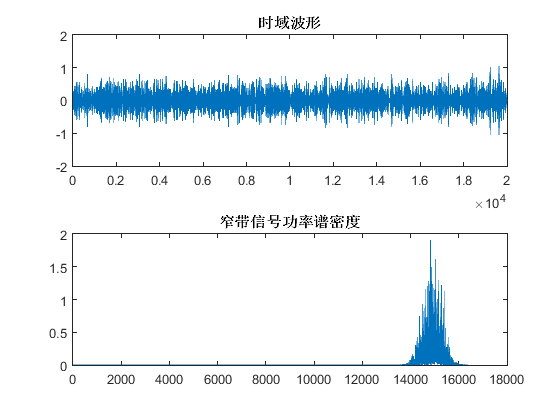
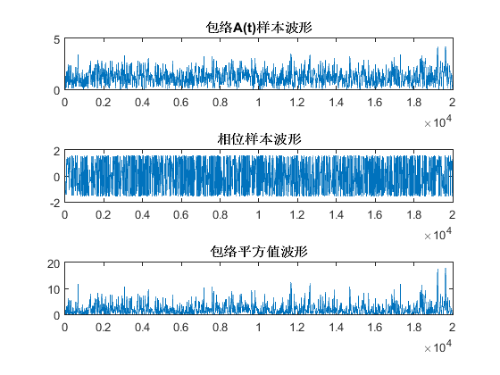
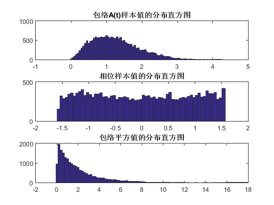

实验III：通信信号统计特性分析、仿真实现及应用
之三： 窄带信号的包络、相位、包络平方分布特性 参照例 4.7-X 2016.11.4
Contents
准备环境
clear all close all clc
生成窄带随机信号
N=20000;f0=10000;deltf=500;fs=22000;M=50; %调用参数设置 x= Narrowbandsignal (N,f0,deltf,fs,M); %调用产生窄带随机信号的函数
展示窄带数据
时域
figure, subplot(2,1,1);plot(x); title('时域波形') % 功率谱 subplot(2,1,2);plot( periodogram( x)); title('窄带信号功率谱密度') x=x/sqrt(var(x)); %归一化方差处理窄带高斯过程X(t)
取得窄带随机信号的包络、相位、包络平方
[At, Ph, A2]=EnvelopPhase(x,f0,fs); %调用A(t)、包络平方产生函数
展示窄带随机信号的包络、相位、包络平方的时域波形
%包络A(t)样本值的分布直方图 figure;subplot(3,1,1);plot(At); %包络A(t)样本值的分布直方图 title('包络A(t)样本波形'); subplot(3,1,2);plot(Ph); %相位样本值的分布直方图 title('相位样本波形'); subplot(3,1,3);plot(A2); %包络平方值的分布直方图 title('包络平方值波形');
展示窄带随机信号的包络、相位、包络平方的分布
%包络A(t)样本值的分布直方图 LA =0:0.05:4.5; %包络样本值的分布区间 figure;subplot(3,1,1);hist(At,LA); %包络A(t)样本值的分布直方图 title('包络A(t)样本值的分布直方图'); LP=-pi/2:0.05:pi/2; %相位样本值的分布区间 subplot(3,1,2);;hist(Ph,LP); %相位样本值的分布直方图 title('相位样本值的分布直方图'); LA2=0:0.2:16; %包络平方值的分布区间 subplot(3,1,3);hist(A2,LA2); %包络平方值的分布直方图 title('包络平方值的分布直方图');